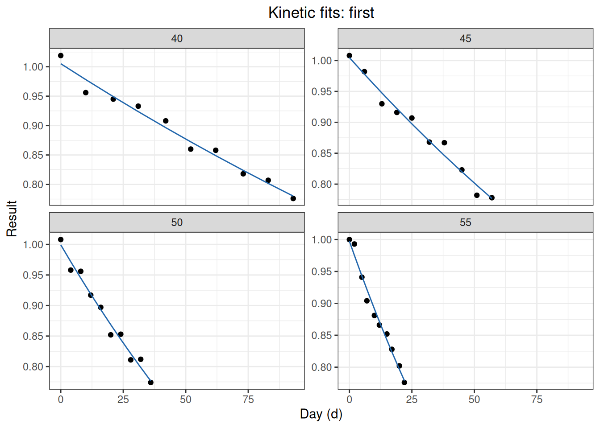
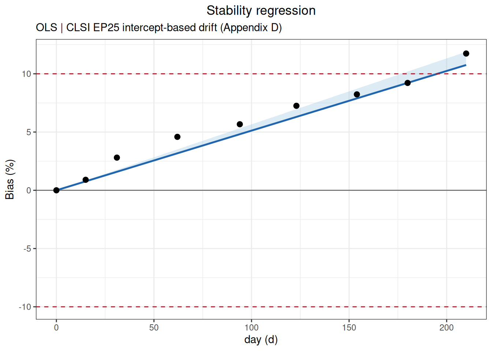
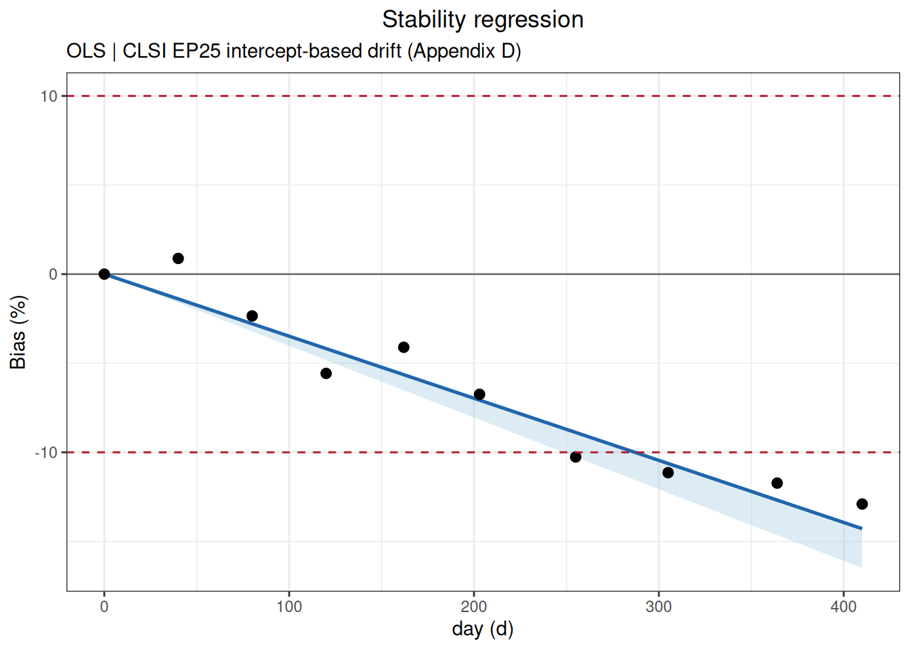
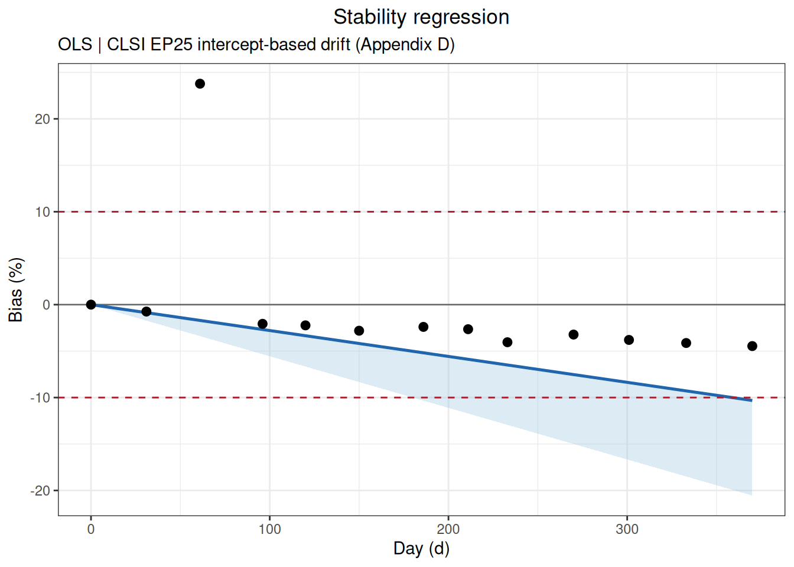

代码
library(ivdtools)
library(readr)稳定性研究用于评价试剂、校准品或质控品在规定储存、运输或使用条件下，检测结果随时间变化的程度。本文演示如何使用 ivdtools 包建立稳定性分析计划，完成节点偏差、条件间及相对首节点的回归趋势、达到允许限值的时间预测、阿伦纽斯（Arrhenius）加速稳定性分析及平均动力学温度（mean kinetic temperature，MKT）计算。
本文数据均为确定性的教学示例，仅用于验证分析流程。示例中的允许漂移、加速降解限值、目标温度和活化能不是通用接受标准；正式研究必须使用方案、风险评估或适用标准预先规定的参数。选择浓度值或信号值作为响应值应根据方案确定。外推范围必须预先规定。稳定性函数计算漂移、回归和温度模型结果，不替代产品稳定性方案、包装/运输论证或批准的货架期判定。
library(ivdtools)
library(readr)| 函数 | 主要用途 | 关键输入或输出 |
|---|---|---|
stability_plan() |
规划回归系列的最少时间点 | 允许漂移、变异、重复数、预期漂移和效能 |
stability_bias() |
计算各条件相对首节点的绝对/相对偏差 | 节点汇总、条件内偏差、条件间偏差和限值状态 |
stability_regression() |
单条件趋势或试验/参考条件配对偏差回归 | 斜率、单侧置信限、节点结果和诊断信息 |
stability_time() |
预测点估计或单侧置信限达到允许偏差的时间 | 预测时间、是否外推及搜索范围 |
arrhenius() |
根据多个升高温度的降解速率外推目标温度稳定期 | 动力学级数、速率、活化能和预测稳定期 |
mkt() |
计算等间隔或时间加权的平均动力学温度 | 各探头及合并 MKT |
stability_plan()假设研究方案规定允许相对漂移为 5%，预期漂移为 2.5%，重复性变异为 1.5%，目标效能为 90%。比较每个时间点测量 1、2 或 3 次时所需的最少时间点：
plan <- stability_plan(
allowable_drift = 5,
variability = 1.5,
replicates = c(1, 2, 3),
expected_drift = 2.5,
power = 0.9,
mode = "simple",
bias_type = "relative"
)
print(plan)
Stability Study Time-Point Plan
Allowable drift: 5.0000; expected drift: 2.5000
Success target: 90%; method: CLSI EP25 Appendix A Table A2
Replicates Residual Allow/Resid Min nodes
------------------------------------------------
1 1.5000 3.3333 n/a
2 1.0607 4.5455 28
3 0.8660 5.7471 18
n/a -- No feasible entry in EP25 table.allowable_drift 必须为正；variability 在 simple 模式下是相对 CV/SD，在 components 模式下可为方差分量数据框。replicates 可为一个或多个每节点重复数。输出为 stability_plan，包含不同功效和重复数下的时间点/样本量建议。
stability_bias()读取原始数据：
bias_data <- read_csv(
"./data/004-稳定性研究/stability-bias-example.csv",
show_col_types = FALSE
)
head(bias_data, 6)# A tibble: 6 × 4
Condition Day Replicate Result
<chr> <dbl> <dbl> <dbl>
1 2-8C 0 1 100.
2 2-8C 0 2 99.8
3 2-8C 0 3 100
4 2-8C 7 1 99.9
5 2-8C 7 2 100.
6 2-8C 7 3 99.8以 2-8C 为参考条件，按各条件自身首节点归一化，评价相对偏差是否在示例性的 ±5% 限值内：
bias_result <- stability_bias(
data = bias_data,
condition = "Condition",
time = "Day",
value = "Result",
reference_condition = "2-8C",
limit = 5,
bias_type = "relative",
time_unit = "d"
)
print(bias_result)
Stability Bias Analysis
Conditions: 2 (2-8C, 25C)
Reference: 2-8C
Time unit: d
Node comparisons:20
Acceptance: +/- 5.0000 (relative); 10/10 nodes passed
Within-condition bias (vs first node)
Cond Time Value Bias(%) Status
----------------------------------------------
2-8C 0.0000 100.0000 0.0000 Pass
2-8C 7.0000 99.9333 -0.0667 Pass
2-8C 14.0000 99.7333 -0.2667 Pass
2-8C 21.0000 99.5000 -0.5000 Pass
2-8C 28.0000 99.3333 -0.6667 Pass
25C 0.0000 100.0000 0.0000 Pass
25C 7.0000 99.2333 -0.7667 Pass
25C 14.0000 98.3333 -1.6667 Pass
25C 21.0000 97.2333 -2.7667 Pass
25C 28.0000 95.8333 -4.1667 Pass
Between-condition bias (reference: 2-8C)
Time Condition TestVal Bias(%)
--------------------------------------
0.0000 25C 100.0000 0.0000
7.0000 25C 99.2333 -0.7005
14.0000 25C 98.3333 -1.4037
21.0000 25C 97.2333 -2.2781
28.0000 25C 95.8333 -3.5235函数按条件和时间汇总均值，并返回 stability_bias 对象，含节点均值、相对/绝对偏差、参考条件和限值状态。reference_condition = NULL 时软件会按数据顺序选基准，应在正式分析中显式指定。缺失或非有限观测会被清理，必须保存清理记录。条件内偏差以各条件自己的首节点为基线；条件间偏差则在相同时间点比较试验条件和参考条件。
plot(bias_result)
stability_regression()读取原始数据：
regression_data <- read_csv(
"./data/004-稳定性研究/stability-regression-example.csv",
show_col_types = FALSE
)
head(regression_data, 6)# A tibble: 6 × 4
Condition Day Replicate Result
<chr> <dbl> <dbl> <dbl>
1 2-8C 0 1 100.
2 2-8C 0 2 99.9
3 2-8C 0 3 100
4 2-8C 7 1 100
5 2-8C 7 2 99.8
6 2-8C 7 3 100. 在每个匹配时间点计算 25C 相对 2-8C 的相对偏差，并对偏差随时间进行回归。示例预先指定结果随时间降低，因此使用 direction = "decrease"。
regression_result <- stability_regression(
data = regression_data,
time = "Day",
value = "Result",
condition = "Condition",
mode = "compare",
test_condition = "25C",
reference_condition = "2-8C",
bias_type = "relative",
direction = "decrease",
conf.level = 0.95,
limit = 5,
time_unit = "d"
)
print(regression_result)
Stability Regression
Mode: compare
Test condition: 25C
Reference: 2-8C
Fit: WLS (1/SE^2); intercept = 0.0799, slope = -0.1025
Direction: decrease
One-sided CI: 95.0%
R-squared: 0.9956
Cook distance: row(s) 6 > 1; not removed
Time ObsBias Estimate CI_limit Status
--------------------------------------------------
0.0000 0.0000 0.0799 -0.0750
7.0000 -0.6669 -0.6376 -0.7566
14.0000 -1.3013 -1.3552 -1.4522
21.0000 -2.0040 -2.0728 -2.1717
28.0000 -2.6747 -2.7904 -2.9140
42.0000 -4.3842 -4.2256 -4.4296 mode = "self" 用单条件首节点作为参考；mode = "compare" 比较试验条件和参考条件。direction = "auto" 由斜率推断方向，正式方案应尽量显式写成 decrease 或 increase。limit = NULL 只计算模型，不给出接受性状态。
返回 stability_regression，重点字段包括拟合对象、斜率/截距、方向、偏差尺度、置信限、观测时间范围、条件映射和排除记录。用 print() 查看摘要，用 plot() 查看趋势、偏差和置信限。
plot(regression_result)
本示例识别出一个 Cook 距离较大的节点，但函数不会自动删除；应回查原始记录、实验过程和方案规定，并在有充分理由时进行包含/不包含该节点的敏感性分析。
stability_regression()mode = "self" 可分析单个条件自身随时间的变化。以下仍使用回归示例数据，但仅选择 25C 条件；各节点的 observed_bias 相对于该条件首节点均值计算：
self_regression_result <- stability_regression(
data = regression_data,
time = "Day",
value = "Result",
condition = "Condition",
mode = "self",
test_condition = "25C",
bias_type = "relative",
direction = "decrease",
conf.level = 0.95,
limit = 5,
time_unit = "d"
)
print(self_regression_result)
Stability Regression
Mode: self
Test condition: 25C
Fit: WLS (1/SE^2); intercept = 100.0849, slope = -0.1115
Direction: decrease
One-sided CI: 95.0%
R-squared: 0.9966
Cook distance: row(s) 1, 6 > 1; not removed
Time ObsBias Estimate CI_limit Status
--------------------------------------------------
0.0000 0.0000 -0.0000 -0.0000
7.0000 -0.7000 -0.7797 -0.8278
14.0000 -1.4000 -1.5594 -1.6555
21.0000 -2.2000 -2.3391 -2.4833
28.0000 -2.9667 -3.1188 -3.3110
42.0000 -4.7667 -4.6782 -4.9665 plot(self_regression_result)
首节点观测偏差固定为 0；模型估计值则由全部时间点共同拟合，不要求回归截距恰好通过首节点。
stability_time()stability_time() 分别计算点估计和单侧置信限首次达到 -5% 偏差的时间：
time_result <- stability_time(
regression_result,
limit = 5,
max_time = 90
)
print(time_result)
Stability Limit Time
Limit: 5.0000 (relative); direction: decrease
estimate 49.5548 d [EXTRAPOLATED]
one_sided_ci 47.2316 d [EXTRAPOLATED]输入必须是 stability_regression 对象。函数分别考察点估计或单侧置信限首次达到限值的时间，返回 stability_time，并标记是否超出观测范围。max_time 只是搜索上限，不是科学上合理的货架期；严重外推必须单独论证。
plot(time_result)
本例最长实际观察时间为 42 天，而预测达到限值的时间超过了观察范围，因此输出标记为 EXTRAPOLATED。外推结果依赖线性趋势在未观察区间继续成立的假设，不能等同于实测稳定性证据；应显著报告外推距离和不确定性，并优先用更长的实际观察数据确认。
arrhenius()读取和核验原始数据：
arrhenius_data <- read_csv(
"./data/004-稳定性研究/stability-arrhenius-example.csv",
show_col_types = FALSE
)
head(arrhenius_data, 6)# A tibble: 6 × 4
Temperature Day Replicate Result
<dbl> <dbl> <dbl> <dbl>
1 30 0 1 100.
2 30 0 2 99.8
3 30 7 1 99.6
4 30 7 2 99.4
5 30 14 1 99.1
6 30 14 2 98.9示例使用 30、37 和 45 °C 的加速数据，外推至 5 °C；允许相对变化 10%，并预先指定降解方向为降低：
arrhenius_result <- arrhenius(
data = arrhenius_data,
temperature = "Temperature",
time = "Day",
value = "Result",
target_temp = 5,
order = "auto",
direction = "decrease",
limit = 10,
bias_type = "relative",
temp_unit = "C",
time_unit = "d",
conf.level = 0.95
)
print(arrhenius_result)
Arrhenius Stability Analysis
Kinetic order: zero (auto-selected)
Direction: decrease
Activation Ea: 97.159 kJ/mol
Target rate: 0.002346 /d
Limit time: 4263.7878 d [1585.3589, 11467.3633]order 可选 auto、zero、first；temp_unit 可用 C 或 K。返回 arrhenius，包含不同温度的降解速率、活化能、动力学级数、目标温度预测和限值时间。必须检查速率方向、温度覆盖、模型拟合和目标温度外推；不能因 auto 返回结果就视为动力学级数已被验证。从升高温度外推至目标储存温度可能跨越很大范围，预测稳定期及其区间必须与模型假设、实际时间数据和验证研究一起解释。
plot(arrhenius_result)

mkt()读取和核验原始温度数据：
mkt_data <- read_csv(
"./data/004-稳定性研究/stability-mkt-example.csv",
show_col_types = FALSE
)
mkt_data$Timestamp <- as.POSIXct(
mkt_data$Timestamp,
format = "%Y-%m-%d %H:%M:%S",
tz = "UTC"
)
head(mkt_data, 6)# A tibble: 6 × 3
Timestamp Probe_A Probe_B
<dttm> <dbl> <dbl>
1 2026-07-01 00:00:00 25 24.5
2 2026-07-01 06:00:00 26 25.5
3 2026-07-01 12:00:00 29 28.5
4 2026-07-01 18:00:00 28 27.5
5 2026-07-02 00:00:00 25 24.8
6 2026-07-02 08:00:00 24 24.2使用两个温度探头和实际时间间隔，温度单位为摄氏度，活化能采用示例值 83.144 kJ/mol：
mkt_result <- mkt(
data = mkt_data,
temp_cols = c("Probe_A", "Probe_B"),
time = "Timestamp",
temp_unit = "C",
ea = 83.144
)
print(mkt_result)
Mean Kinetic Temperature
Ea: 83.144 kJ/mol
Method: Time-weighted trapezoidal MKT
Probe_A 299.538 K 26.388 C
Probe_B 299.194 K 26.044 C
Combined 299.367 K 26.217 C返回 mkt，包含各探头和合并的平均动力学温度。提供 time 时按时间间隔加权；不提供时按等间隔处理。ea 为 kJ/mol 的活化能假设，不能在报告中省略。
当不同浓度水平、样本类型或批次需要分别评价时，应保留样本标识，先拆分数据，再对每个样本使用相同且预先规定的参数分析。读取并核验多样本原始数据：
multiple_samples_data <- read_csv(
"./data/004-稳定性研究/stability-multiple-samples-example.csv",
show_col_types = FALSE
)
head(multiple_samples_data, 6)# A tibble: 6 × 4
Sample Day Replicate Result
<chr> <dbl> <dbl> <dbl>
1 Sample_A 0 1 100.
2 Sample_A 0 2 99.8
3 Sample_A 0 3 100
4 Sample_A 7 1 99.7
5 Sample_A 7 2 99.5
6 Sample_A 7 3 99.8使用 split_by_factors() 按分类列建立具名数据列表。函数保留拆分列，列表名称直接采用实际 样本值，并报告每组行数和因分组缺失而排除的行数：
sample_data_list <- split_by_factors(
multiple_samples_data,
variable = "Sample"
)
sample_data_list
Data split by factors
Variable: Sample
Groups: 2
Missing/excluded: 0
Sample_A n = 18
Sample_B n = 18sample_a_data <- sample_data_list[["Sample_A"]]再逐个样本执行分析。
附录 B 给出控制品在 40、45、50 和 55 ℃下的加速稳定性数据，目标储存温度为 25 ℃，允许结果下降 20%。标准先对各温度的结果取自然对数并拟合一级动力学，再用阿伦纽斯模型外推 25 ℃ 的反应速率和稳定期。
读取和核验原始数据：
ep25_b_data <- read_csv(
"./data/004-稳定性研究/std-ep25-appendix-b.csv",
show_col_types = FALSE
)
head(ep25_b_data, 6)# A tibble: 6 × 3
Temperature Day Result
<dbl> <dbl> <dbl>
1 40 0 1.02
2 40 10 0.956
3 40 21 0.945
4 40 31 0.933
5 40 42 0.908
6 40 52 0.86 按标准附录 B 的一级动力学、下降方向、20%允许变化和 25 ℃目标温度进行分析：
ep25_b_result <- arrhenius(
data = ep25_b_data,
temperature = "Temperature",
time = "Day",
value = "Result",
target_temp = 25,
order = "first",
direction = "decrease",
limit = 20,
bias_type = "relative",
temp_unit = "C",
time_unit = "d",
conf.level = 0.95
)
print(ep25_b_result)
Arrhenius Stability Analysis
Kinetic order: first
Direction: decrease
Activation Ea: 80.160 kJ/mol
Target rate: 0.000582 /d
Limit time: 383.1423 d [330.8315, 443.7244]
WARNING: Observed degradation exceeds 20% at one or more temperatures.plot(ep25_b_result)

从 arrhenius() 返回对象中提取各温度的降解速率、阿伦纽斯回归系数、25 ℃目标速率和稳定期，再与附录 B 的原文结果对照：
| appendix | statistic | standard | ivdtools |
|---|---|---|---|
| EP25-A2 Appendix B / 40C | rate | 2.7257e-03 | 0.0027257 |
| EP25-A2 Appendix B / 45C | rate | 4.5154e-03 | 0.0045154 |
| EP25-A2 Appendix B / 50C | rate | 7.0087e-03 | 0.0070087 |
| EP25-A2 Appendix B / 55C | rate | 1.1243e-02 | 0.0112430 |
| EP25-A2 Appendix B / Arrhenius | slope | -9.6320e+03 | -9640.9966367 |
| EP25-A2 Appendix B / Arrhenius | intercept | 2.4874e+01 | 24.8877147 |
| EP25-A2 Appendix B / 25C | target_rate | 5.8250e-04 | 0.0005824 |
| EP25-A2 Appendix B / 25C | shelf_life | 3.8300e+02 | 383.1423039 |
附录 C1 的单批试剂数据覆盖 0～418 天，目标声明期为 364 天，允许漂移为 10%。三个系列均为每个时间点的均值；这里直接按 stability_regression() 的单条件、相对偏差和下降方向处理。
ep25_c1 <- read_csv(
"./data/004-稳定性研究/std-ep25-appendix-c1.csv",
show_col_types = FALSE
)
head(ep25_c1, 6)# A tibble: 6 × 3
series day result
<chr> <dbl> <dbl>
1 low_panel 0 7.07
2 low_panel 33 6.95
3 low_panel 61 6.99
4 low_panel 95 6.88
5 low_panel 121 6.98
6 low_panel 155 6.83ep25_c1_list <- split_by_factors(
ep25_c1,
variable = "series"
)
ep25_c1_list
Data split by factors
Variable: series
Groups: 3
Missing/excluded: 0
low_panel n = 13
low_control n = 13
high_control n = 13使用 stability_regression 进行分析：
ep25_low_panel <- stability_regression(
ep25_c1_list$low_panel,
time = "day", value = "result", mode = "self",
bias_type = "relative", direction = "decrease",
conf.level = 0.95, limit = 10, time_unit = "d"
)
ep25_low_control <- stability_regression(
ep25_c1_list$low_control,
time = "day", value = "result", mode = "self",
bias_type = "relative", direction = "decrease",
conf.level = 0.95, limit = 10, time_unit = "d"
)
ep25_high_control <- stability_regression(
ep25_c1_list$high_control,
time = "day", value = "result", mode = "self",
bias_type = "relative", direction = "decrease",
conf.level = 0.95, limit = 10, time_unit = "d"
)将计算结果与标准原文结果比较：
| appendix | statistic | standard | ivdtools |
|---|---|---|---|
| EP25-A2 Appendix C1 / low_panel | slope | -0.001567 | -0.001567 |
| EP25-A2 Appendix C1 / low_panel | intercept | 7.065000 | 7.065100 |
| EP25-A2 Appendix C1 / low_panel | change_364 | -8.070000 | -8.074378 |
| EP25-A2 Appendix C1 / low_panel | change_364_upper_CL | -9.260000 | -9.262841 |
| EP25-A2 Appendix C1 / low_panel | change_418 | -9.270000 | -9.272226 |
| EP25-A2 Appendix C1 / low_panel | change_418_upper_CL | -10.640000 | -10.636999 |
| EP25-A2 Appendix C1 / low_control | slope | -0.002873 | -0.002873 |
| EP25-A2 Appendix C1 / low_control | intercept | 25.270000 | 25.268365 |
| EP25-A2 Appendix C1 / low_control | change_364 | -4.140000 | -4.139278 |
| EP25-A2 Appendix C1 / low_control | change_364_upper_CL | -5.130000 | -5.129081 |
| EP25-A2 Appendix C1 / low_control | change_418 | -4.750000 | -4.753346 |
| EP25-A2 Appendix C1 / low_control | change_418_upper_CL | -5.890000 | -5.889988 |
| EP25-A2 Appendix C1 / high_control | slope | -0.009103 | -0.009103 |
| EP25-A2 Appendix C1 / high_control | intercept | 99.740000 | 99.742806 |
| EP25-A2 Appendix C1 / high_control | change_364 | -3.320000 | -3.321944 |
| EP25-A2 Appendix C1 / high_control | change_364_upper_CL | -4.170000 | -4.166660 |
| EP25-A2 Appendix C1 / high_control | change_418 | -3.810000 | -3.814759 |
| EP25-A2 Appendix C1 / high_control | change_418_upper_CL | -4.780000 | -4.784791 |
比例漂移是分析定义，读取后按 on_test / reference 明确计算，再按水平拆分：
ep25_c2_1_data <- read_csv(
"./data/004-稳定性研究/std-ep25-appendix-c2-1.csv",
show_col_types = FALSE
)
head(ep25_c2_1_data, 6)# A tibble: 6 × 4
level month on_test reference
<chr> <dbl> <dbl> <dbl>
1 low 0 1.01 1.00
2 low 1 0.999 1.00
3 low 2 0.992 1.01
4 low 4 0.983 1.00
5 low 5 0.985 1.01
6 low 6 0.97 1.00ep25_c2_1_data$proportional_drift <-
ep25_c2_1_data$on_test / ep25_c2_1_data$reference
ep25_c2_1_list <- split_by_factors(
ep25_c2_1_data,
variable = "level"
)
ep25_c2_1_list
Data split by factors
Variable: level
Groups: 2
Missing/excluded: 0
low n = 7
high n = 7使用 stability_regression() 顺序分析两个校准水平：
ep25_c2_1_low_result <- stability_regression(
data = ep25_c2_1_list$low,
time = "month",
value = "proportional_drift",
mode = "self",
bias_type = "relative",
direction = "decrease",
limit = 5,
time_unit = "month",
conf.level = 0.95
)
ep25_c2_1_high_result <- stability_regression(
data = ep25_c2_1_list$high,
time = "month",
value = "proportional_drift",
mode = "self",
bias_type = "relative",
direction = "decrease",
limit = 5,
time_unit = "month",
conf.level = 0.95
)
ep25_c2_1_low_time <- stability_time(
ep25_c2_1_low_result,
max_time = 20
)
ep25_c2_1_high_time <- stability_time(
ep25_c2_1_high_result,
max_time = 20
)
print(ep25_c2_1_low_result)
Stability Regression
Mode: self
Test condition: condition
Fit: OLS; intercept = 1.0020, slope = -0.0059
Direction: decrease
One-sided CI: 95.0%
R-squared: 0.9566
Cook distance: row(s) 1 > 1; not removed
Note: WLS unavailable; OLS used.
Time ObsBias Estimate CI_limit Status
--------------------------------------------------
0.0000 0.0000 -0.0000 -0.0000
1.0000 -1.2873 -0.5887 -0.6995
2.0000 -2.1737 -1.1775 -1.3989
4.0000 -2.8683 -2.3549 -2.7978
5.0000 -3.2483 -2.9437 -3.4973
6.0000 -3.8659 -3.5324 -4.1968
6.5000 -4.3541 -3.8268 -4.5465 print(ep25_c2_1_high_result)
Stability Regression
Mode: self
Test condition: condition
Fit: OLS; intercept = 1.0078, slope = -0.0054
Direction: decrease
One-sided CI: 95.0%
R-squared: 0.5652
Cook distance: row(s) 7 > 1; not removed
Note: WLS unavailable; OLS used.
Time ObsBias Estimate CI_limit Status
--------------------------------------------------
0.0000 0.0000 -0.0000 -0.0000
1.0000 0.2612 -0.5317 -0.9441
2.0000 -0.0475 -1.0633 -1.8881
4.0000 -0.3329 -2.1266 -3.7763
5.0000 -2.2787 -2.6583 -4.7204
6.0000 -0.8759 -3.1900 -5.6644 *
6.5000 -4.7539 -3.4558 -6.1365 *plot(ep25_c2_1_low_result)
plot(ep25_c2_1_high_result)
与标准原文结果比较：
| appendix | statistic | standard | ivdtools |
|---|---|---|---|
| EP25-A2 Appendix C2.1 / low_calibrator | change_6 | -3.53 | -3.532421 |
| EP25-A2 Appendix C2.1 / low_calibrator | change_6_upper_CL | -4.20 | -4.196768 |
| EP25-A2 Appendix C2.1 / low_calibrator | change_6.5 | -3.83 | -3.826789 |
| EP25-A2 Appendix C2.1 / low_calibrator | change_6.5_upper_CL | -4.55 | -4.546498 |
| EP25-A2 Appendix C2.1 / low_calibrator | ci_limit_time | 7.10 | 7.148359 |
| EP25-A2 Appendix C2.1 / high_calibrator | change_6 | -3.19 | -3.189971 |
| EP25-A2 Appendix C2.1 / high_calibrator | change_6_upper_CL | -5.66 | -5.664441 |
| EP25-A2 Appendix C2.1 / high_calibrator | change_6.5 | -3.46 | -3.455801 |
| EP25-A2 Appendix C2.1 / high_calibrator | change_6.5_upper_CL | -6.14 | -6.136478 |
| EP25-A2 Appendix C2.1 / high_calibrator | ci_limit_time | 5.30 | 5.296198 |
ep25_c2_2_data <- read_csv(
"./data/004-稳定性研究/std-ep25-appendix-c2-2.csv",
show_col_types = FALSE
)
head(ep25_c2_2_data, 6)# A tibble: 6 × 3
level day result
<chr> <dbl> <dbl>
1 level_1 0 19.9
2 level_1 15 20.2
3 level_1 31 20.2
4 level_1 62 20.3
5 level_1 94 20.7
6 level_1 123 21.1ep25_c2_2_list <- split_by_factors(
ep25_c2_2_data,
variable = "level"
)
ep25_c2_2_list
Data split by factors
Variable: level
Groups: 3
Missing/excluded: 0
level_1 n = 9
level_2 n = 9
level_3 n = 9使用 stability_regression() 顺序分析三个校准水平：
ep25_c2_2_level_1_result <- stability_regression(
data = ep25_c2_2_list$level_1,
time = "day",
value = "result",
mode = "self",
bias_type = "relative",
direction = "increase",
limit = 10,
time_unit = "d",
conf.level = 0.95
)
ep25_c2_2_level_2_result <- stability_regression(
data = ep25_c2_2_list$level_2,
time = "day",
value = "result",
mode = "self",
bias_type = "relative",
direction = "increase",
limit = 10,
time_unit = "d",
conf.level = 0.95
)
ep25_c2_2_level_3_result <- stability_regression(
data = ep25_c2_2_list$level_3,
time = "day",
value = "result",
mode = "self",
bias_type = "relative",
direction = "increase",
limit = 10,
time_unit = "d",
conf.level = 0.95
)
print(ep25_c2_2_level_1_result)
Stability Regression
Mode: self
Test condition: condition
Fit: OLS; intercept = 19.9291, slope = 0.0088
Direction: increase
One-sided CI: 95.0%
R-squared: 0.9789
Note: WLS unavailable; OLS used.
Time ObsBias Estimate CI_limit Status
--------------------------------------------------
0.0000 0.0000 0.0000 0.0000
15.0000 1.5075 0.6616 0.7341
31.0000 1.5075 1.3673 1.5171
62.0000 2.0101 2.7345 3.0343
94.0000 4.0201 4.1459 4.6003
123.0000 6.0302 5.4249 6.0196
154.0000 7.0352 6.7922 7.5367
180.0000 8.5427 7.9389 8.8092
210.0000 9.0452 9.2620 10.2774 *print(ep25_c2_2_level_2_result)
Stability Regression
Mode: self
Test condition: condition
Fit: OLS; intercept = 100.9678, slope = 0.0292
Direction: increase
One-sided CI: 95.0%
R-squared: 0.9426
Note: WLS unavailable; OLS used.
Time ObsBias Estimate CI_limit Status
--------------------------------------------------
0.0000 0.0000 0.0000 0.0000
15.0000 1.2859 0.4341 0.5129
31.0000 0.3956 0.8970 1.0600
62.0000 0.9891 1.7941 2.1201
94.0000 2.3739 2.7201 3.2143
123.0000 2.9674 3.5592 4.2060
154.0000 4.1543 4.4563 5.2660
180.0000 5.7369 5.2087 6.1551
210.0000 6.0336 6.0768 7.1809 print(ep25_c2_2_level_3_result)
Stability Regression
Mode: self
Test condition: condition
Fit: OLS; intercept = 502.3132, slope = 0.2573
Direction: increase
One-sided CI: 95.0%
R-squared: 0.9808
Note: WLS unavailable; OLS used.
Time ObsBias Estimate CI_limit Status
--------------------------------------------------
0.0000 0.0000 0.0000 0.0000
15.0000 0.9014 0.7683 0.8491
31.0000 2.8045 1.5878 1.7547
62.0000 4.5873 3.1756 3.5094
94.0000 5.6691 4.8147 5.3207
123.0000 7.2516 6.3001 6.9622
154.0000 8.2332 7.8879 8.7169
180.0000 9.2147 9.2196 10.1886 *
210.0000 11.7388 10.7562 11.8867 *plot(ep25_c2_2_level_3_result)
与标准原文结果比较：
| appendix | statistic | standard | ivdtools |
|---|---|---|---|
| EP25-A2 Appendix C2.2 / level_1 | change_180 | 7.97 | 7.938892 |
| EP25-A2 Appendix C2.2 / level_1 | change_180_upper_CL | 8.78 | 8.809166 |
| EP25-A2 Appendix C2.2 / level_1 | change_210 | 9.30 | 9.262041 |
| EP25-A2 Appendix C2.2 / level_1 | change_210_upper_CL | 10.24 | 10.277360 |
| EP25-A2 Appendix C2.2 / level_2 | change_180 | 5.19 | 5.208658 |
| EP25-A2 Appendix C2.2 / level_2 | change_180_upper_CL | 6.11 | 6.155086 |
| EP25-A2 Appendix C2.2 / level_2 | change_210 | 6.05 | 6.076767 |
| EP25-A2 Appendix C2.2 / level_2 | change_210_upper_CL | 7.13 | 7.180933 |
| EP25-A2 Appendix C2.2 / level_3 | change_180 | 9.19 | 9.219626 |
| EP25-A2 Appendix C2.2 / level_3 | change_180_upper_CL | 10.18 | 10.188639 |
| EP25-A2 Appendix C2.2 / level_3 | change_210 | 10.73 | 10.756231 |
| EP25-A2 Appendix C2.2 / level_3 | change_210_upper_CL | 11.87 | 11.886745 |
ep25_c3_1_data <- read_csv(
"./data/004-稳定性研究/std-ep25-appendix-c3-1.csv",
show_col_types = FALSE
)
head(ep25_c3_1_data, 6)# A tibble: 6 × 4
control month condition result
<chr> <dbl> <chr> <dbl>
1 negative 0 reference 0.23
2 negative 1 reference 0.24
3 negative 2 reference 0.24
4 negative 3 reference 0.23
5 negative 4 reference 0.24
6 negative 5 reference 0.25ep25_c3_1_list <- split_by_factors(
ep25_c3_1_data,
variable = "control"
)
ep25_c3_1_list
Data split by factors
Variable: control
Groups: 2
Missing/excluded: 0
negative n = 18
positive n = 18使用 stability_regression() 分别处理阴性和阳性对照：
ep25_c3_1_negative_result <- stability_regression(
data = ep25_c3_1_list$negative,
time = "month",
value = "result",
condition = "condition",
mode = "compare",
test_condition = "on_test",
reference_condition = "reference",
bias_type = "absolute",
direction = "increase",
limit = 0.10,
time_unit = "month",
conf.level = 0.95
)
ep25_c3_1_positive_result <- stability_regression(
data = ep25_c3_1_list$positive,
time = "month",
value = "result",
condition = "condition",
mode = "compare",
test_condition = "on_test",
reference_condition = "reference",
bias_type = "relative",
direction = "decrease",
limit = 5,
time_unit = "month",
conf.level = 0.95
)
print(ep25_c3_1_negative_result)
Stability Regression
Mode: compare
Test condition: on_test
Reference: reference
Fit: OLS; intercept = 0.0004, slope = 0.0103
Direction: increase
One-sided CI: 95.0%
R-squared: 0.8962
Note: WLS unavailable; OLS used.
Time ObsBias Estimate CI_limit Status
--------------------------------------------------
0.0000 0.0000 0.0004 0.0121
1.0000 0.0200 0.0107 0.0204
2.0000 0.0300 0.0210 0.0290
3.0000 0.0200 0.0314 0.0381
4.0000 0.0300 0.0417 0.0480
5.0000 0.0400 0.0520 0.0588
6.0000 0.0700 0.0623 0.0705
7.0000 0.0800 0.0727 0.0826
7.5000 0.0800 0.0778 0.0888 print(ep25_c3_1_positive_result)
Stability Regression
Mode: compare
Test condition: on_test
Reference: reference
Fit: OLS; intercept = -0.0461, slope = -0.3655
Direction: decrease
One-sided CI: 95.0%
R-squared: 0.7765
Note: WLS unavailable; OLS used.
Time ObsBias Estimate CI_limit Status
--------------------------------------------------
0.0000 -0.1992 -0.0461 -0.7018
1.0000 -0.5988 -0.4116 -0.9539
2.0000 -0.8016 -0.7772 -1.2218
3.0000 -1.3917 -1.1427 -1.5179
4.0000 -1.3972 -1.5082 -1.8593
5.0000 -0.8048 -1.8738 -2.2547
6.0000 -1.8036 -2.2393 -2.6937
7.0000 -2.7944 -2.6048 -3.1591
7.5000 -3.6000 -2.7876 -3.3979 plot(ep25_c3_1_negative_result)
与标准原文结果比较：
| appendix | statistic | standard | ivdtools |
|---|---|---|---|
| EP25-A2 Appendix C3.1 / negative_control | change_7 | 0.07 | 0.072663 |
| EP25-A2 Appendix C3.1 / negative_control | change_7_upper_CL | 0.09 | 0.082595 |
| EP25-A2 Appendix C3.1 / negative_control | change_7.5 | 0.08 | 0.077826 |
| EP25-A2 Appendix C3.1 / negative_control | change_7.5_upper_CL | 0.10 | 0.088761 |
| EP25-A2 Appendix C3.1 / positive_control | change_7 | -2.56 | -2.604835 |
| EP25-A2 Appendix C3.1 / positive_control | change_7_upper_CL | -3.53 | -3.159133 |
| EP25-A2 Appendix C3.1 / positive_control | change_7.5 | -2.74 | -2.787602 |
| EP25-A2 Appendix C3.1 / positive_control | change_7.5_upper_CL | -3.79 | -3.397864 |
阴性对照使用绝对偏差和 0.10 IU/mL 限值，阳性对照使用相对偏差和 5% 限值；
ep25_c3_2_data <- read_csv(
"./data/004-稳定性研究/std-ep25-appendix-c3-2.csv",
show_col_types = FALSE
)
head(ep25_c3_2_data, 6)# A tibble: 6 × 3
level day result
<chr> <dbl> <dbl>
1 level_1 0 1.21
2 level_1 40 1.17
3 level_1 80 1.22
4 level_1 120 1.18
5 level_1 162 1.15
6 level_1 203 1.14ep25_c3_2_list <- split_by_factors(
ep25_c3_2_data,
variable = "level"
)
ep25_c3_2_list
Data split by factors
Variable: level
Groups: 3
Missing/excluded: 0
level_1 n = 10
level_2 n = 10
level_3 n = 10使用 stability_regression() 顺序分析三个控制水平：
ep25_c3_2_level_1_result <- stability_regression(
data = ep25_c3_2_list$level_1,
time = "day",
value = "result",
mode = "self",
bias_type = "relative",
direction = "decrease",
limit = 10,
time_unit = "d",
conf.level = 0.95
)
ep25_c3_2_level_2_result <- stability_regression(
data = ep25_c3_2_list$level_2,
time = "day",
value = "result",
mode = "self",
bias_type = "relative",
direction = "decrease",
limit = 10,
time_unit = "d",
conf.level = 0.95
)
ep25_c3_2_level_3_result <- stability_regression(
data = ep25_c3_2_list$level_3,
time = "day",
value = "result",
mode = "self",
bias_type = "relative",
direction = "decrease",
limit = 10,
time_unit = "d",
conf.level = 0.95
)
print(ep25_c3_2_level_1_result)
Stability Regression
Mode: self
Test condition: condition
Fit: OLS; intercept = 1.2060, slope = -0.0003
Direction: decrease
One-sided CI: 95.0%
R-squared: 0.7575
Note: WLS unavailable; OLS used.
Time ObsBias Estimate CI_limit Status
--------------------------------------------------
0.0000 0.0000 -0.0000 -0.0000
40.0000 -3.3058 -0.9917 -1.3431
80.0000 0.8264 -1.9833 -2.6861
120.0000 -2.4793 -2.9750 -4.0292
162.0000 -4.9587 -4.0162 -5.4394
203.0000 -5.7851 -5.0327 -6.8160
255.0000 -8.2645 -6.3219 -8.5620
305.0000 -10.7438 -7.5614 -10.2408 *
364.0000 -6.6116 -9.0241 -12.2218 *
410.0000 -9.9174 -10.1645 -13.7663 *print(ep25_c3_2_level_2_result)
Stability Regression
Mode: self
Test condition: condition
Fit: OLS; intercept = 3.4233, slope = -0.0012
Direction: decrease
One-sided CI: 95.0%
R-squared: 0.9402
Note: WLS unavailable; OLS used.
Time ObsBias Estimate CI_limit Status
--------------------------------------------------
0.0000 0.0000 -0.0000 -0.0000
40.0000 0.8798 -1.3939 -1.6098
80.0000 -2.3460 -2.7879 -3.2195
120.0000 -5.5718 -4.1818 -4.8293
162.0000 -4.1056 -5.6454 -6.5195
203.0000 -6.7449 -7.0742 -8.1695
255.0000 -10.2639 -8.8863 -10.2622 *
305.0000 -11.1437 -10.6287 -12.2744 *
364.0000 -11.7302 -12.6847 -14.6488 *
410.0000 -12.9032 -14.2877 -16.5001 *print(ep25_c3_2_level_3_result)
Stability Regression
Mode: self
Test condition: condition
Fit: OLS; intercept = 7.5028, slope = -0.0016
Direction: decrease
One-sided CI: 95.0%
R-squared: 0.9912
Note: WLS unavailable; OLS used.
Time ObsBias Estimate CI_limit Status
--------------------------------------------------
0.0000 0.0000 -0.0000 -0.0000
40.0000 -0.9321 -0.8327 -0.8822
80.0000 -1.5979 -1.6653 -1.7645
120.0000 -2.6631 -2.4980 -2.6467
162.0000 -3.1957 -3.3723 -3.5731
203.0000 -4.5273 -4.2258 -4.4774
255.0000 -5.8589 -5.3083 -5.6243
305.0000 -6.7909 -6.3491 -6.7271
364.0000 -7.3236 -7.5773 -8.0285
410.0000 -8.3888 -8.5348 -9.0431 plot(ep25_c3_2_level_2_result)
与标准原文结果比较：
| appendix | statistic | standard | ivdtools |
|---|---|---|---|
| EP25-A2 Appendix C3.2 / level_1 | change_364 | -9.00 | -9.024133 |
| EP25-A2 Appendix C3.2 / level_1 | change_364_upper_CL | -12.19 | -12.221806 |
| EP25-A2 Appendix C3.2 / level_1 | change_410 | -10.14 | -10.164545 |
| EP25-A2 Appendix C3.2 / level_1 | change_410_upper_CL | -13.73 | -13.766320 |
| EP25-A2 Appendix C3.2 / level_2 | change_364 | -12.68 | -12.684724 |
| EP25-A2 Appendix C3.2 / level_2 | change_364_upper_CL | -14.66 | -14.648829 |
| EP25-A2 Appendix C3.2 / level_2 | change_410 | -14.28 | -14.287738 |
| EP25-A2 Appendix C3.2 / level_2 | change_410_upper_CL | -16.52 | -16.500055 |
| EP25-A2 Appendix C3.2 / level_3 | change_364 | -7.58 | -7.577276 |
| EP25-A2 Appendix C3.2 / level_3 | change_364_upper_CL | -8.05 | -8.028464 |
| EP25-A2 Appendix C3.2 / level_3 | change_410 | -8.54 | -8.534844 |
| EP25-A2 Appendix C3.2 / level_3 | change_410_upper_CL | -9.07 | -9.043050 |
三个控制水平均按相对偏差、下降方向和 10% 允许变化处理。结果比较使用函数直接返回的节点估计及单侧置信限。
ep25_c4_data <- read_csv(
"./data/004-稳定性研究/std-ep25-appendix-c4.csv",
show_col_types = FALSE
)
head(ep25_c4_data, 6)# A tibble: 6 × 5
sample condition time replicate result
<chr> <chr> <dbl> <dbl> <dbl>
1 low_panel unstressed 0 1 7.24
2 low_panel unstressed 0 2 6.98
3 low_panel unstressed 0 3 6.94
4 low_panel unstressed 0 4 6.82
5 low_panel unstressed 0 5 7.09
6 low_panel unstressed 0 6 7.14ep25_c4_list <- split_by_factors(
ep25_c4_data,
variable = "sample"
)
ep25_c4_list
Data split by factors
Variable: sample
Groups: 3
Missing/excluded: 0
low_panel n = 20
low_control n = 20
high_control n = 20使用 stability_bias() 分别评价三个样本：
ep25_c4_low_panel_result <- stability_bias(
data = ep25_c4_list$low_panel,
condition = "condition",
time = "time",
value = "result",
reference_condition = "unstressed",
limit = 5,
bias_type = "relative",
time_unit = "d"
)
ep25_c4_low_control_result <- stability_bias(
data = ep25_c4_list$low_control,
condition = "condition",
time = "time",
value = "result",
reference_condition = "unstressed",
limit = 5,
bias_type = "relative",
time_unit = "d"
)
ep25_c4_high_control_result <- stability_bias(
data = ep25_c4_list$high_control,
condition = "condition",
time = "time",
value = "result",
reference_condition = "unstressed",
limit = 5,
bias_type = "relative",
time_unit = "d"
)
print(ep25_c4_low_panel_result)
Stability Bias Analysis
Conditions: 2 (unstressed, stressed)
Reference: unstressed
Time unit: d
Node comparisons:0
Acceptance: +/- 5.0000 (relative); 2/2 nodes passed
Within-condition bias (vs first node)
Cond Time Value Bias(%) Status
----------------------------------------------
unstressed 0.0000 7.0710 0.0000 Pass
stressed 0.0000 7.0700 0.0000 Pass
Between-condition bias (reference: unstressed)
Time Condition TestVal Bias(%)
--------------------------------------
0.0000 stressed 7.0700 -0.0141print(ep25_c4_low_control_result)
Stability Bias Analysis
Conditions: 2 (unstressed, stressed)
Reference: unstressed
Time unit: d
Node comparisons:0
Acceptance: +/- 5.0000 (relative); 2/2 nodes passed
Within-condition bias (vs first node)
Cond Time Value Bias(%) Status
----------------------------------------------
unstressed 0.0000 25.1740 0.0000 Pass
stressed 0.0000 25.1630 0.0000 Pass
Between-condition bias (reference: unstressed)
Time Condition TestVal Bias(%)
--------------------------------------
0.0000 stressed 25.1630 -0.0437print(ep25_c4_high_control_result)
Stability Bias Analysis
Conditions: 2 (unstressed, stressed)
Reference: unstressed
Time unit: d
Node comparisons:0
Acceptance: +/- 5.0000 (relative); 2/2 nodes passed
Within-condition bias (vs first node)
Cond Time Value Bias(%) Status
----------------------------------------------
unstressed 0.0000 99.1610 0.0000 Pass
stressed 0.0000 99.6930 0.0000 Pass
Between-condition bias (reference: unstressed)
Time Condition TestVal Bias(%)
--------------------------------------
0.0000 stressed 99.6930 0.5365与标准原文结果比较：
| appendix | statistic | standard | ivdtools |
|---|---|---|---|
| EP25-A2 Appendix C4 / low_panel | relative_bias | 0.0 | -0.014142 |
| EP25-A2 Appendix C4 / low_control | relative_bias | 0.0 | -0.043696 |
| EP25-A2 Appendix C4 / high_control | relative_bias | 0.5 | 0.536501 |
运输条件案例使用 stability_bias() 的参考条件比较结果。标准原文还报告了重复测定的置信区间，但本函数的 between_bias 不返回该项，因此比较表只列出函数直接返回的相对偏差。
读取和核验标准数据：
ep25_c5_data <- read_csv(
"./data/004-稳定性研究/std-ep25-appendix-c5.csv",
show_col_types = FALSE
)
head(ep25_c5_data, 6)# A tibble: 6 × 2
Day Result
<dbl> <dbl>
1 0 12.1
2 31 12.0
3 61 15.0
4 96 11.9
5 120 11.8
6 150 11.8ep25_c5_without_day_61 <- ep25_c5_data[ep25_c5_data$Day != 61, ]
head(ep25_c5_without_day_61, 6)# A tibble: 6 × 2
Day Result
<dbl> <dbl>
1 0 12.1
2 31 12.0
3 96 11.9
4 120 11.8
5 150 11.8
6 186 11.8使用 stability_regression() 评价含离群值和剔除离群值的结果:
ep25_c5_with_result <- stability_regression(
data = ep25_c5_data,
time = "Day",
value = "Result",
mode = "self",
bias_type = "relative",
direction = "decrease",
limit = 10,
time_unit = "d",
conf.level = 0.95
)
ep25_c5_without_result <- stability_regression(
data = ep25_c5_without_day_61,
time = "Day",
value = "Result",
mode = "self",
bias_type = "relative",
direction = "decrease",
limit = 10,
time_unit = "d",
conf.level = 0.95
)
print(ep25_c5_with_result)
Stability Regression
Mode: self
Test condition: condition
Fit: OLS; intercept = 12.6703, slope = -0.0035
Direction: decrease
One-sided CI: 95.0%
R-squared: 0.2118
Cook distance: row(s) 3 > 1; not removed
Note: WLS unavailable; OLS used.
Time ObsBias Estimate CI_limit Status
--------------------------------------------------
0.0000 0.0000 -0.0000 -0.0000
31.0000 -0.7432 -0.8643 -1.7218
61.0000 23.7820 -1.7008 -3.3880
96.0000 -2.0644 -2.6766 -5.3320
120.0000 -2.2296 -3.3457 -6.6650
150.0000 -2.8076 -4.1822 -8.3313
186.0000 -2.3947 -5.1859 -10.3308 *
211.0000 -2.6424 -5.8829 -11.7193 *
233.0000 -4.0462 -6.4963 -12.9412 *
270.0000 -3.2205 -7.5279 -14.9963 *
301.0000 -3.7985 -8.3922 -16.7181 *
333.0000 -4.1288 -9.2844 -18.4954 *
370.0000 -4.4591 -10.3160 -20.5504 *print(ep25_c5_without_result)
Stability Regression
Mode: self
Test condition: condition
Fit: OLS; intercept = 12.0369, slope = -0.0013
Direction: decrease
One-sided CI: 95.0%
R-squared: 0.8969
Note: WLS unavailable; OLS used.
Time ObsBias Estimate CI_limit Status
--------------------------------------------------
0.0000 0.0000 -0.0000 -0.0000
31.0000 -0.7432 -0.3428 -0.4080
96.0000 -2.0644 -1.0615 -1.2634
120.0000 -2.2296 -1.3269 -1.5793
150.0000 -2.8076 -1.6586 -1.9741
186.0000 -2.3947 -2.0567 -2.4479
211.0000 -2.6424 -2.3331 -2.7769
233.0000 -4.0462 -2.5764 -3.0665
270.0000 -3.2205 -2.9855 -3.5534
301.0000 -3.7985 -3.3283 -3.9614
333.0000 -4.1288 -3.6821 -4.3826
370.0000 -4.4591 -4.0912 -4.8695 plot(ep25_c5_with_result)
Cook 距离：
stability_regression() 已在返回对象中计算每个时间点的 Cook 距离，并将 Cook 距离大于 1 的观测记录在 diagnostics$influential 中：
ep25_c5_cook_distance <- data.frame(
Day = ep25_c5_data$Day,
Cook_distance = unname(ep25_c5_with_result$diagnostics$cook_distance)
)
ep25_c5_cook_distance Day Cook_distance
1 0 1.172637e-01
2 31 7.185586e-02
3 61 1.078556e+00
4 96 2.477807e-02
5 120 1.448582e-02
6 150 9.639484e-03
7 186 2.404885e-03
8 211 1.263118e-03
9 233 4.142662e-03
10 270 1.404264e-06
11 301 3.051755e-04
12 333 3.335777e-03
13 370 1.752518e-02ep25_c5_influential <- ep25_c5_cook_distance[
ep25_c5_cook_distance$Cook_distance > 1,
]
ep25_c5_influential Day Cook_distance
3 61 1.078556与标准原文结果比较：
| appendix | statistic | standard | ivdtools |
|---|---|---|---|
| EP25-A2 Appendix C5 / with_outlier | cook_distance_day_61 | 1.08 | 1.078556 |
| EP25-A2 Appendix C5 / with_outlier | change_333 | -9.28 | -9.284424 |
| EP25-A2 Appendix C5 / with_outlier | change_333_upper_CL | -18.50 | -18.495388 |
| EP25-A2 Appendix C5 / with_outlier | change_370 | -10.32 | -10.316027 |
| EP25-A2 Appendix C5 / with_outlier | change_370_upper_CL | -20.55 | -20.550431 |
| EP25-A2 Appendix C5 / without_day_61 | change_333 | -3.68 | -3.682110 |
| EP25-A2 Appendix C5 / without_day_61 | change_333_upper_CL | -4.38 | -4.382553 |
| EP25-A2 Appendix C5 / without_day_61 | change_370 | -4.09 | -4.091233 |
| EP25-A2 Appendix C5 / without_day_61 | change_370_upper_CL | -4.87 | -4.869504 |